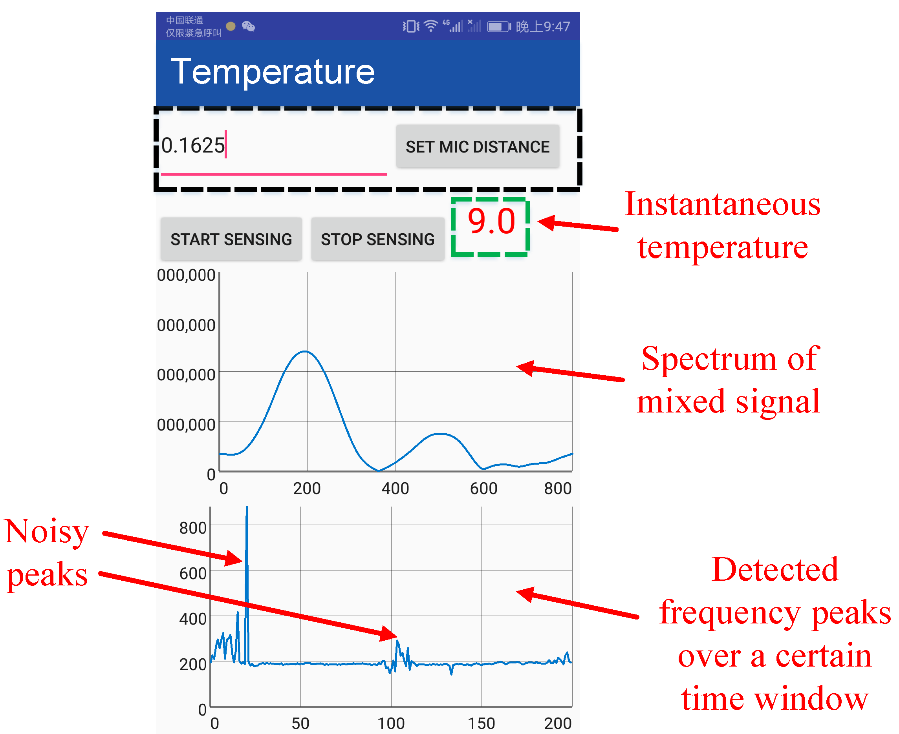

<div id="body">
<div id="body_border">
<div id="body_border1">
<div style="border-bottom: 1px solid #D1D1D1;">
<div style="border-bottom: 1px solid #959595;">
<div class="header" style="text-align: center;">
<div class="line4" style="font-family: Arial, Helvetica, sans-serif; text-align: center;"><span style="color: #000000;"><strong><span class="style17"><span style="background-color: #ffffff;">SST: Software Sonic Thermometer on Acoustic-enabled IoT Devices </span></span><span style="background-color: #ffffff;">&nbsp;</span></strong></span></div>
</div>
</div>
</div>
<!--header 结束-->
<div class="IndexList">
<div id="selfIntroduction" class="style4">
<p class="style1"><strong>Project Description:</strong></p>
<p> Temperature is an important data source for weather forecasting, agriculture irrigation, anomaly detection, etc. While temperature measurement can be achieved via low-cost yet standalone hardware with reasonable accuracy, integrating thermal sensing into ubiquitous computing devices is highly non-trivial due to the design requirement for specific heat isolation and proper device layout. We present the first integrated thermometer using commercial-off-the-shelf acoustic-enabled devices. Our Software Sonic Thermometer (SST) utilizes on-board dual microphones on commodity mobile devices to estimate sound speed, which has a known relation with temperature. To precisely measure temperature via sound speed, we propose a chirp mixing approach to circumvent low sampling rates on commodity hardware and design a pipeline of signal processing blocks to handle channel distortions. SST, for the first time, empowers ubiquitous computing devices with thermal sensing capability. It is portable and cost-effective, making it competitive with current thermometers using dedicated hardware.
SST is potential to facilitate many interesting applications such as large-scale distributed thermal sensing, yielding high temporal/spatial resolutions with unimaginable low costs. Our SST prototype on a commodity platform achieves a median accuracy of 0.5 centigrade even at varying humidity levels.</p>
<p><strong><span class="style1">Acknowledgement:</span> </strong></p>
<ul>
<li>This project is accomplished when I was a Ph.D student at Huazhong University of Science and Technology.
<p><strong><span class="style1">Updates &amp; News:</span> </strong></p>
</li>
</ul>
</div>
<div id="selfIntroduction" class="style4">
<ul>
<li><strong>2018/12</strong> The <span class="style18"> <strong>mRehab</strong></span> team wins the finalist award (5 out of 74 teams) in NYS Department of Health Aging Innovation Competitions.</li>
<li><strong>2018/04</strong> The <span class="style18"> <strong>mRehab </strong></span>product starts the first in-home study in East Amherst, NY.</li>
<li><strong>2018/03</strong> The <span class="style18"> <strong>mRehab </strong></span>student team wins the 2nd place award in UB Aging Innovation Challenges.</li>
<li><strong>2018/02</strong> The android app of <span class="style18"> <strong>mRehab</strong></span> will be launched in early March 2018.
<p><strong><span class="style1">People:</span> </strong></p>
<ul>
<li>Dr. Wenyao Xu (Computer Science &amp; Engineering) - mHealth Technologies</li>
<li>Dr. Jeanne Langan (Rehabilitation Science) - Stroke Rehabilitation</li>
<li>Dr. Lora Cavuoto (Industrial System &amp; Engineering) - Human Factors and Ergonomics</li>
<li>Mr. Heamchand Subryan (Inclusive Design) - Product Design</li>
<li>Dr. Sutanuka Bhattacharjya (Rehabilitation Science) - Clinical Study</li>
<li>Chen Song (Ph.D. student)</li>
<li>Zhengxiong Li (Ph.D student)</li>
<li>Baicheng Chen (UG student)</li>
<li>Matthew Stafford (UG student)</li>
<li>Zhuolin Yang (UG student)</li>
</ul>
<p><strong><span class="style1">Collaborators:</span> </strong></p>
<p>Dr. Feng Lin, University of Colorado Denver</p>
<p><strong><span class="style1">Related Publications:</span> </strong></p>
</li>
</ul>
</div>
<div id="selfIntroduction" class="style4">
<ul>
<li>[4] Lora Cavuoto, Heamchand Subryan, Matthew Stafford, Zhuolin Yang, Wenyao Xu, Sutanuka Bhattacharjya, Jeanne Langan, "Understanding User Requirements for the Design of a Home-Based Stroke Rehabilitation System", <em>the Human Factors and Ergonomics Society 2018 International Annual Meeting</em>, Philadelphia, PA, October, 2018</li>
<li>[3] Sutanuka Bhattacharjya, Matthew Stafford, Zhuolin Yang, Chen Song, Heamchand Subryan, Lora Cavuoto, Wenyao Xu, Jeanne Langan, "Assessing the functionality of a portable rehabilitation system used for self-management of upper extremity function by individuals with stroke", <em>the American Occupational Therapy Association Annual Conference</em>, Salt Lake City, UT, April, 2018</li>
<li><span class="style9">[2] Tri Vu</span>, <span class="style9">Hoan Tran</span>, <span class="style9">Chen Song</span>, Feng Lin, Jeanne Langan, Lora Cavuoto, Wenyao Xu, "BiGRA: A Preliminary Bilateral Hand Grip Coordination Rehabilitation Using Home-Based Evaluation System for Stroke Patients", <em>IEEE Annual Body Sensor Networks Conference </em>(<strong>BSN'18</strong>), Las Vegas, Nevada, March 2018</li>
<li><span class="style9">[1] Feng Lin, Jerry Ajay, Jeanne Langan, Lora Cavuoto, Ifeoma Nwogu, Heamchand Subryan, Wenyao Xu, "A Portable and Cost-Effective Upper Extremity Rehabilitation System for Individuals with Upper Limb Motor Deficits", <em>IEEE Annual Wireless Health Conference </em>(<strong>WH'16</strong>), Bethesda, MD, October 2016</span></li>
</ul>
</div>
</div>
</div>
</div>
</div>
<!--body结束-->